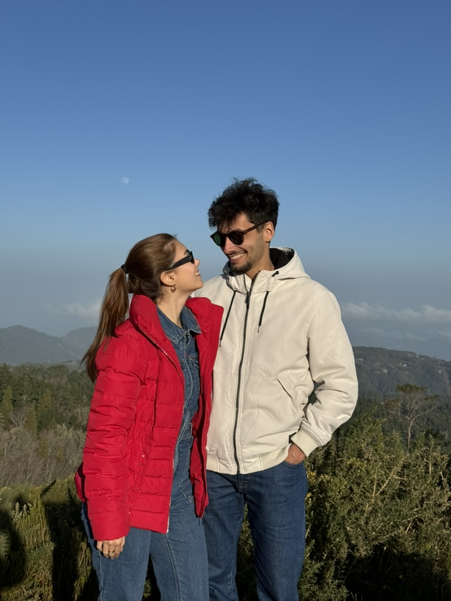
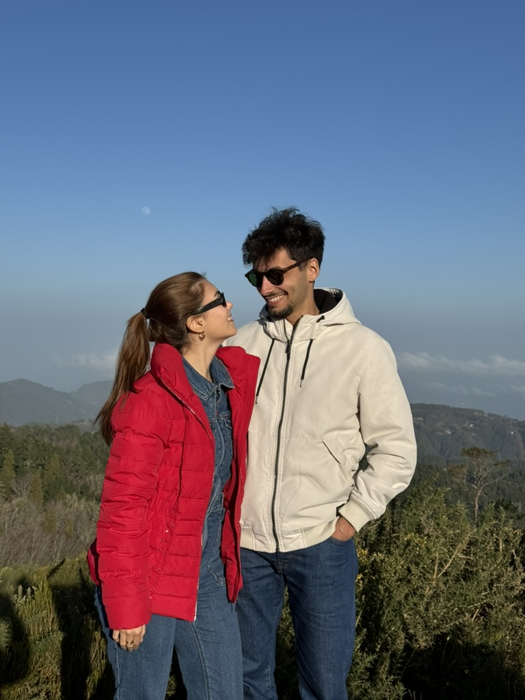
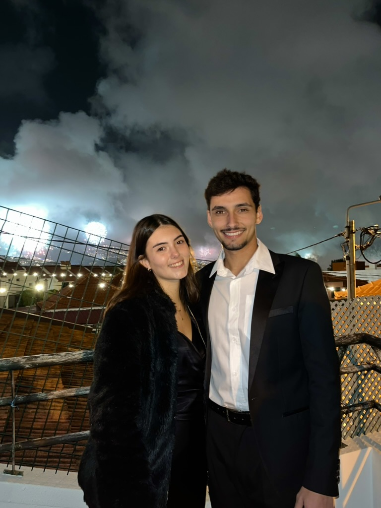
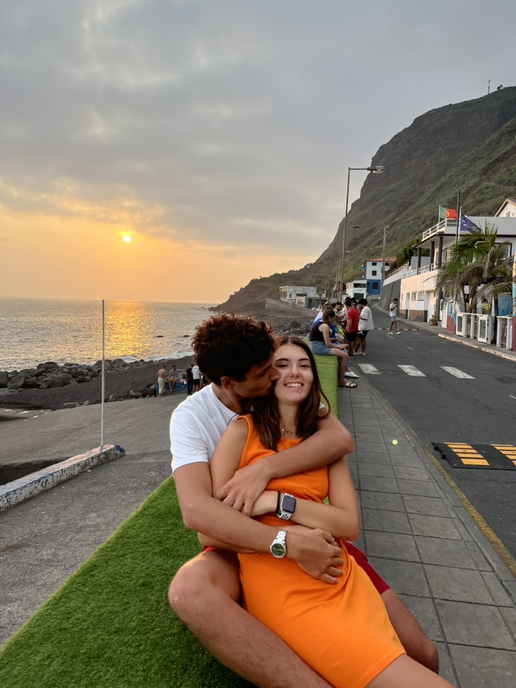
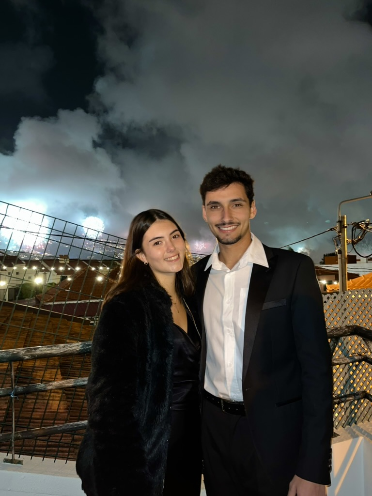
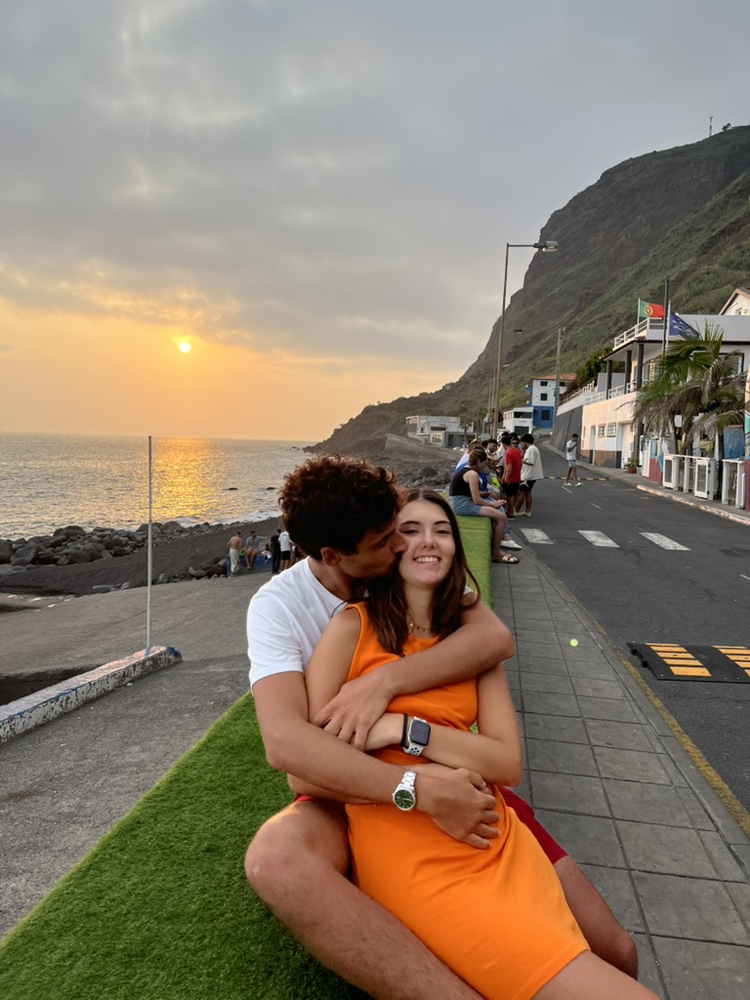

Não poderia estar mais contente, feliz, orgulhoso e tantos outros adjetivos que possam expressar o que estou a sentir neste momento.
Passados 4 anos de esforço, luta e muitos momentos difíceis, tanto na universidade quanto fora dela, conseguiste!!!
Conseguiste algo que poucas pessoas conseguem, e que tu, com todo o mérito, mereces.
Eu que te acompanhei desde praticamente o início, sei bem o quão dedicada, responsável e apaixonada és pelo trabalho que fazes, e isso não está ao nível de qualquer um.
Ouvir as histórias que me contavas sobre as pessoas que ajudaste e cuidaste só demonstra a vocação que tens nesta área tão bonita.
Finalmente, enfermeira. Mas não uma enfermeira qualquer, és a minha enfermeira, a enfermeira que amo, e que vi a se transformar numa mulher ainda melhor, dia após dia.
Sei que serás uma excelente profissional, assim como és uma pessoa maravilhosa.
São quase 3 anos contigo, e este é o fim de mais um ciclo. Para o futuro que te aguarda, tenho a certeza que será tão brilhante como o teu coração.
Estarei sempre ao teu lado, para te apoiar em qualquer que seja a tua decisão.
Para a minha melhor amiga, companheira, mulher e enfermeira da minha vida…
 

 


